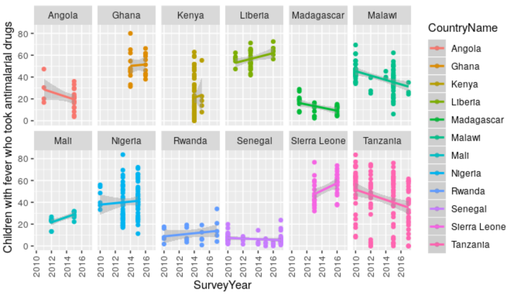
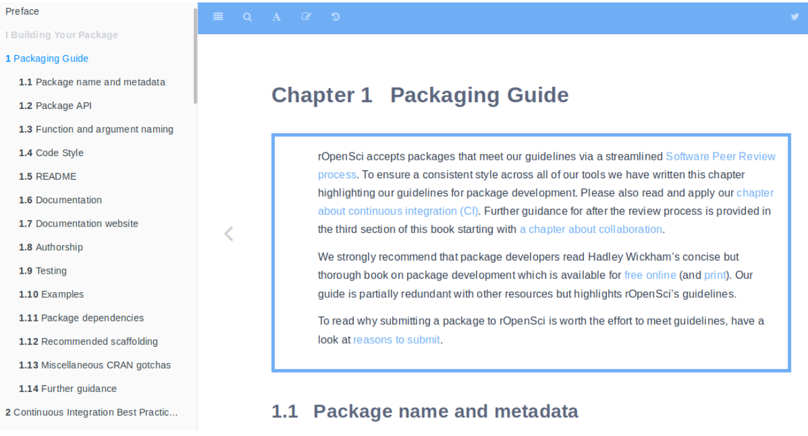

Feb 4, 2019
Software 📦
CRAN:  GitHub:
GitHub: 
New Versions
- A new version (
v0.3.2) ofaukis on CRAN - eBird data extraction and processing. See the release notes for changes. Checkout the docs to get started.

- A new version (
v1.0.7) ofhelminthRis on CRAN - Access London Natural History Museum Host-Helminth Record Database. See the release notes for changes. Checkout the vignette to get started.
changes to
listLocations()due toggmapAPI key requirement;cleanData()changes - A new version (
v1.0.5) ofnasapoweris on CRAN - NASA POWER API Client. See the release notes for changes. Checkout the docs to get started.
fixes problem with WS2M not being available through
nasapower - A new version (
v0.5.0) oflawnis on CRAN - Client for Turf.js for geospatial analysis. See the release notes for changes. Checkout the vignette to get started.
fix unit tests for upcoming
V8pkg changes - A new version (
v0.5.0) ofrerddapis on CRAN - General Purpose Client for ERDDAP Servers. See the release notes for changes. Checkout the vignettes to get started.
replace httr with crul; many
griddap()fixes; set default server URL - A new version (
v0.3.2) ofgeojsonis on CRAN - Classes for GeoJSON. See the release notes for changes. Checkout the vignettes to get started.
ndgeo_read()bug fix - A new version (
v0.2.7) ofropenaqis on CRAN - Air quality data from the open data platform OpenAQ. See the release notes for changes. Checkout the vignettes to get started.
better error messages; remove not used
ggmapdep - A new version (
v0.9.5) oftaxizeis on CRAN - taxonomic toolbelt for R. See the release notes for changes. Checkout the taxize book to get started.
iucn_summary_iddefunct; downstream gains WORMS data source;col_downstream()gainsextant_onlyparam; new fxnid2name(); lots and lots of small changes and bug fixes - A new version (
v0.4.1) ofNLMRis on CRAN - Simulating neutral landscape models. See the release notes for changes. Checkout the docs to get started.
nlm_neigh,nlm_mpd,nlm_randomrectangularclusternow implemented in Rcpp; doc improvements; bug fixes - A new version (
v0.2.2) ofpatentsviewis on CRAN - An R client to the PatentsView API. See the release notes for changes. Checkout the docs to get started.
vignettes removed from package
- A new version (
v0.6.1) ofrdhsis on CRAN - Client for Demographic and Health Survey (DHS) Data. See the release notes for changes. Checkout the docs to get started.
extraction(add_geo=TRUE)correction for Kenya 2014 surveys; Geospatial covariate data sets now supported correctly - A new version (
v2.3.0) ofRNeXMLis on CRAN - Semantically Rich I/O for the NeXML Format. See the release notes for changes. Checkout the vignettes to get started.
add_meta()now works w/ trees and characters; pkg handles nested meta elements properly now - A new version (
v0.3.0) ofnatservis on CRAN - NatureServe R Interface. See the release notes for changes. Checkout the vignette to get started.
new vignette; improve failure behavior; bug fixes
- A new version (
v2.6) ofassertris on CRAN - Assertive Programming for R Analysis Pipelines. See the release notes for changes. Checkout the vignette to get started.
bug fix for
rlangpkg changes - A new version (
v2.0-7) ofCoordinateCleaneris on CRAN - automated cleaning of occurrence records from biological collections. See the release notes for changes. Checkout the docs to get started.
add pkg citation; improved docs for
cc_outl() - A new version (
v1.2.0) offulltextis on CRAN - full text of scholarly articles across many data sources. See the release notes for changes. Checkout the fulltext book to get started.
ft_get()gains progress param; can now set cache path withfull_pathparam incache_options_set();ft_chunks/ft_tabularizedefunct (see pubchunks);ft_get_sidefunct (see suppdata); replace httr with crul
Software Review ✔
We accept community contributed packages via our onboarding system - an open software review system, sorta like scholarly paper review, but way better. We’ll highlight newly onboarded packages here. A huge thanks to our reviewers, who do a lot of work reviewing (see the blog post on our review system), and the authors of the packages!
If you want to be a reviewer fill out this short form, and we’ll ping you when there’s a submission that fits in your area of expertise.
No new submissions or approved submissions.
On the blog
Software Review
OJ Watson wrote about his recently reviewed package rdhs Interacting with The Demographic and Health Surveys (DHS) Program data, including the motivation for the package, what the package does, and some lessons from the process.

The rOpenSci editors wrote changes in our software review: first, “rOpenSci onboarding” has been changed to “rOpenSci Software Review”; new editors; changes in standards; issue templates to better direct the different types of submissions; and the new bookdown book “rOpenSci Packages: Development, Maintenance, and Peer Review”. Read the the post: rOpenSci Software Peer Review: Still Improving.

rOpenSci is excited to welcome two new editors: Announcing new software peer review editors: Melina Vidoni and Brooke Anderson.
Use Cases
The following 20 works use/cite rOpenSci software:
- Farache et al. used rnaturalearth in their paper The unknown followers: Discovery of a new species of Sycobia Walker (Hymenoptera: Epichrysomallinae) associated with Ficus benjamina L. (Moraceae) in the Neotropical region 1
- Shen & Spruit used plotly in their paper A Systematic Review of Open Source Clinical Software on GitHub for Improving Software Reuse in Smart Healthcare 2
- Łącki et al. used plotly in their paper masstodon: A tool for assigning peaks and modeling electron transfer reactions in top-down mass spectrometry 3
- Shang & Ghriga used plotly in their paper Exploring social media analytics on community development practices 4
- Duft used crul and rjsonapi in their dissertation Development of a generic concept to process questionnaire result data in different statistical applications 5
- Pettersen et al. used rotl in their paper Linking life-history theory and metabolic theory explains the offspring size-temperature relationship 6
- Waltz et al used plotly in their paper Small is big in Arabidopsis mitochondrial ribosome 7
- Dağ used plotly in their dissertation Binary Classification via GMDH-Type Neural Network Algorithm 8
- Hofmann et al. used plotly in their paper A convenient tool for bivariate data analysis and bar graph plotting with R 9
- Lovelace et al. cited stplanr in their paper stats19: A package for working with open road crash data 10
- Zuquim et al. used spocc in their paper The importance of soils in predicting the future of plant habitat suitability in a tropical forest 11
- Kim et al. used iheatmapr in their paper Distinct gut virome profile of pregnant women with type 1 diabetes in the ENDIA study 12
- Lee et al. used rgbif in their paper REDLISTR: Tools for the IUCN Red Lists of Ecosystems and Threatened Species in R 13
- Krah et al. used RSelenium in their paper rMyCoPortal - an R package to interface with the Mycology Collections Portal 14
- Mankevich et al. used RSelenium in their conference paper Why Zlatan Ibrahimović is Bigger Than Manchester United: Investigating Digital Traces in Co-branding Processes on Social Media Platforms 15
- Muñoz et al. used taxize in their paper Biodiversity Observations Miner: A web application to unlock primary biodiversity data from published literature 16
- Smith et al. used taxize in their paper Metabolic rates of prokaryotic microbes may inevitably rise with global warming 17
- Ladwig et al. used rgbif in their paper Extreme winter warm event causes exceptionally early bud break for many woody species 18
- Pimiento et al. used rfishbase in their paper Evolutionary pathways toward gigantism in sharks and rays 19
- Halsey & White used rotl in their paper Terrestrial locomotion energy costs vary considerably between species: no evidence that this is explained by rate of leg force production or ecology 20
In The News
We’re elated Halley Froehlich found rnoaa to be useful.
Um 'rnoaa' package is an absolute game changer. Thanks @juliesquid @openscapes for the intro! 🤯https://t.co/OdcwDKatd7
— Halley E. Froehlich 🐟 (@DocFroehlich) January 17, 2019
rcrossref is coming in handy for librarians 👌
Life as a Research Support Manager. (Report from EPrints, get DOIs, edit them up in gVim, then feed them through rcrossref with code kindly provided by @preater to get desired publication metadata). pic.twitter.com/qTmXGcwBbV
— Kevin Sanders (@moananddrone) January 24, 2019
#librarydirectorlife I've learned some new and useful things about error handling in GNU R and used rcrossref to work with the @CrossrefOrg API a bit more. One for schol comms / research support folk to check out. https://t.co/762ogGkDkC
— Andrew Preater (@preater) January 24, 2019
Call For Contributors
Part of the mission of rOpenSci is making sustainable software that users can rely on. Some software maintainers need to give up maintenance due to a variety of circumstances. When that happens we try to find new maintainers. We’ve had three recent examples of maintainer transitions within rOpenSci:
- RSelenium: now maintained by Ju Kim
- chromer: now maintained by Paula Andrea
- qualtRics: now maintained by Julia Silge (since our previous newsletter!)
We’ve got two packages in need of a new maintainer:
- webchem: The current maintainer of webchem, Eduard Szöcs, is looking for a new maintainer. See issue #155. Do ping Eduard in that issue and/or email us at info@ropensci.org
- rsnps: The current maintainer would like to hand it over to someone with more expertise in the domain. Please get in touch with Scott if you’re interested.
Related News
- A recent blog post Recursion vs. Looping in Python has a thorough overview of recursion vs. looping; it’s not in R, but the principles still apply.
- In a recent podcast episode on Podcast.__init__, Counteracting Code Complexity With Wily there’s a nice disussion of counteracting code complexity. Again, not in R, but still useful.
- In another recent podcast episode on Podcast.__init__, What You Need To Know About Open Source Licenses And Intellectual Property, there’s a relatively easy to understand discussion about licenses, copyright, patents, CLA’s, and trademarks - relevant to any programming language community.
- NumFOCUS has partnered with Code for Science & Society to do some qualitative research on the systemic challenges to sustainability for data driven tooling in science and scholarship. They would appreciate your participation in a short questionnaire: https://goo.gl/forms/Qk7TJslrMHP388tq1. Additional details about the project can be found on the Code for Science & Society blog
Keep up with rOpenSci
- Mailing list: Sign up with an email address to get this newsletter sent to your inbox -> ropensci.org/#subscribe
- Alternatively, you can subscribe to this newsletter via our XML feed at https://news.ropensci.org/feed.xml or our JSON feed at https://news.ropensci.org/feed.json
- rOpenSci on Twitter: @ropensci
- The rOpenSci blog at ropensci.org/blog - you can subscribe in any RSS aggregator, or manually via https://ropensci.org/feed.xml. We also announce new blog posts on our Twitter account.
Footnotes
-
Farache, F. H. A., Pereira, C. B., Koschnitzke, C., Barros, L. O., Souza, E. M. de C., Felício, D. T., … Pereira, R. A. S. (2018). The unknown followers: Discovery of a new species of Sycobia Walker (Hymenoptera: Epichrysomallinae) associated with Ficus benjamina L. (Moraceae) in the Neotropical region. Journal of Hymenoptera Research, 67, 85–102. https://doi.org/10.3897/jhr.67.29733 ↩
-
Shen, Z., & Spruit, M. (2019). A Systematic Review of Open Source Clinical Software on GitHub for Improving Software Reuse in Smart Healthcare. Applied Sciences, 9(1), 150. https://www.mdpi.com/2076-3417/9/1/150/pdf ↩
-
Łącki, M. K., Lermyte, F., Miasojedow, B., Startek, M. P., Sobott, F., Valkenborg, D., & Gambin, A. (2019). masstodon: A tool for assigning peaks and modeling electron transfer reactions in top-down mass spectrometry. Analytical Chemistry. https://doi.org/10.1021/acs.analchem.8b01479 ↩
-
Shang, d., & Ghriga, m. (2018). Exploring social media analytics on community development practices. Journal of Information Technology Management, 29(4), 39. http://jitm.ubalt.edu/XXIX-4/article3.pdf ↩
-
Duft, S. (2018). Development of a generic concept to process questionnaire result data in different statistical applications (Doctoral dissertation, Ulm University). http://dbis.eprints.uni-ulm.de/1722/1/BA_Duft_2018.pdf ↩
-
Pettersen, A. K., White, C. R., Bryson-Richardson, R. J., & Marshall, D. J. (2019). Linking life-history theory and metabolic theory explains the offspring size-temperature relationship. Ecology Letters. https://doi.org/10.1111/ele.13213 ↩
-
Waltz, F., Nguyen, T.-T., Arrivé, M., Bochler, A., Chicher, J., Hammann, P., … Giegé, P. (2019). Small is big in Arabidopsis mitochondrial ribosome. Nature Plants, 5(1), 106–117. https://doi.org/10.1038/s41477-018-0339-y ↩
-
Dağ, O. (2018). Binary Classification via GMDH-Type Neural Network Algorithm. PhD Thesis. http://www.openaccess.hacettepe.edu.tr:8080/xmlui/handle/11655/5673 ↩
-
Hofmann, A., Cross, M., Karow, M. A., Straub, J. H., Clemen, C. S., & Eichinger, L. (2019). A convenient tool for bivariate data analysis and bar graph plotting with R. Biochemistry and Molecular Biology Education. https://doi.org/10.1002/bmb.21205 ↩
-
Lovelace, R., Morgan, M., Hama, L., & Padgham, M. (2019). stats19: A package for working with open road crash data. Journal of Open Source Software, 4(33), 1181. https://doi.org/10.21105/joss.01181 ↩
-
Zuquim, G., Costa, F. R. C., Tuomisto, H., Moulatlet, G. M., & Figueiredo, F. O. G. (2019). The importance of soils in predicting the future of plant habitat suitability in a tropical forest. Plant and Soil. https://doi.org/10.1007/s11104-018-03915-9 ↩
-
Kim, K. W., Allen, D. W., Briese, T., Couper, J. J., Barry, S. C., … Colman, P. G. (2019). Distinct gut virome profile of pregnant women with type 1 diabetes in the ENDIA study. Open Forum Infectious Diseases. https://doi.org/10.1093/ofid/ofz025 ↩
-
Lee, C. K. F., Keith, D. A., Nicholson, E., & Murray, N. J. (2019). REDLISTR: Tools for the IUCN Red Lists of Ecosystems and Threatened Species in R. Ecography. https://doi.org/10.1111/ecog.04143 ↩
-
Krah, F.-S., Bates, S., & Miller, A. (2019). rMyCoPortal - an R package to interface with the Mycology Collections Portal. Biodiversity Data Journal, 7. https://doi.org/10.3897/bdj.7.e31511 ↩
-
Mankevich, V., Holmström, J., & McCarthy, I. P. (2019, January). Why Zlatan Ibrahimović is Bigger Than Manchester United: Investigating Digital Traces in Co-branding Processes on Social Media Platforms. In Proceedings of the 52nd Hawaii International Conference on System Sciences. https://scholarspace.manoa.hawaii.edu/bitstream/10125/59710/0270.pdf ↩
-
Muñoz, G., Kissling, W. D., & van Loon, E. E. (2019). Biodiversity Observations Miner: A web application to unlock primary biodiversity data from published literature. Biodiversity Data Journal, 7. https://doi.org/10.3897/bdj.7.e28737 ↩
-
Smith, T. P., Thomas, T. J., Garcia-Carreras, B., Sal, S., Yvon-Durocher, G., Bell, T., & Pawar, S. (2019). Metabolic rates of prokaryotic microbes may inevitably rise with global warming. bioRxiv, 524264. https://doi.org/10.1101/524264 ↩
-
Ladwig, L. M., Chandler, J. L., Guiden, P. W., & Henn, J. J. (2019). Extreme winter warm event causes exceptionally early bud break for many woody species. Ecosphere, 10(1), e02542. https://doi.org/10.1002/ecs2.2542 ↩
-
Pimiento, C., Cantalapiedra, J. L., Shimada, K., Field, D. J., & Smaers, J. B. (2019). Evolutionary pathways toward gigantism in sharks and rays. Evolution. https://doi.org/10.1111/evo.13680 ↩
-
Halsey, L. G., & White, C. R. (2019). Terrestrial locomotion energy costs vary considerably between species: no evidence that this is explained by rate of leg force production or ecology. Scientific Reports, 9(1). https://doi.org/10.1038/s41598-018-36565-z ↩